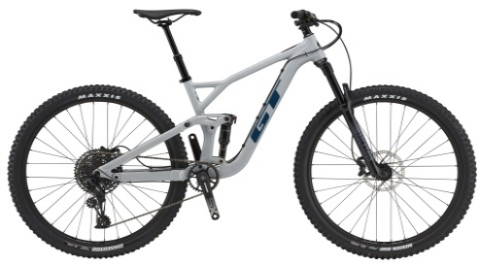

Skladem
Doprava ZDARMA
Zcela nový Jekyll s unikátním odpružením, karbonový rám, 29" kola, zdvih 165 / 170mm, osazení Sram GX 1x12
-20%

Skladem
Doprava ZDARMA
Rám s technologií odpružení LTS, sada SRAM SX, vidlice Rock Shox 35, brzdy Tektro.
-16%

Skladem
Doprava ZDARMA
Rám s technologií odpružení LTS, sada Shimano Deore, vidlice Rock Shox Recon, brzdy Shimano MT200.
-29%
Skladem
Doprava ZDARMA
Ultimátní závodní XC bike, vidlice Lefty Ocho, nový Sram Eagle, průlomové odpružení, agresivní geometrie a nízká hmotnost.